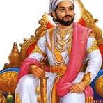

<!DOCTYPE html>
<html lang="en">
<head>
    <meta charset="UTF-8">
    <meta name="தானம் அளிப்பது சிறந்தது" content="தானம் அளிப்பது சிறந்தது, initial-scale=1.0">
    <title>story</title>
</head>
<body>
    <h1><body style="background-color:rgb(162, 159, 161);">
        

    </h2>
    </h2>
</h1>
</body>
<center>
</html>
<h1>தானம் அளிப்பது சிறந்தது <h1>
    <h2>

    <h1>மைசூரை ஒரு மன்னன் ஆண்டு வந்தான். அவன் நீதியும், நேர்மையும் கொண்டவன். அன்பும், அருளும் நிறைந்தவன். அவன் ஒரு சமயம் காட்டுக்கு வேட்டையாட சென்றான்.

        வழியில் வயதான விறகுவெட்டி ஒருவன் தலையில் விறகுகளை சுமந்தபடியே வந்தான். மன்னன் விறகுவெட்டியை பார்த்ததும் தள்ளாத வயதில் இவர் இப்படி கஷ்டப்படுகிறார் என்று வருந்தினான். 
        
        பிறகு விறகு வெட்டியை பார்த்து, “ஐயா, உங்களுக்கு பிள்ளைகள் இல்லையா? இந்த வயதிலும் இப்படி பாடுபடுகிறீர்களே” என்று கேட்டான். அதற்கு விறகு வெட்டி அரசனை பார்த்து, “அரசே, எனக்கு பிள்ளைகள் இருக்கிறார்கள். 
        
        ஆனால் அவர்கள் இப்போது என்னுடன் இல்லை. அவர்கள் தங்களுடைய மனைவிமார்களின் பேச்சை கேட்டு தனிக்குடித்தனம் போய்விட்டார்கள். இப்பொழுது வீட்டில் நானும் என் மனைவியும் மட்டும்தான் இருக்கிறோம். 
        
        
        motivational stories in tamil (1)
        அதனால், இப்படி பாடுபடும்படி ஆகிவிட்டது” என்றான். இதை கேட்டதும் அரசன் அந்த விறகுவெட்டியின் துன்பத்தைப் போக்குவதற்கு தன் நாட்டில் உள்ள சந்தன காட்டின் ஒரு பகுதியை அவனுக்கு தானமாக வழங்கினான். 
        
        இதனால் விறகு வெட்டி பெரும் மகிழ்ச்சி அடைந்தான். விறகு வெட்டிக்கு தன்னுடைய சந்தன காட்டை நன்கொடையாக தந்ததில் அரசனுக்கு மிக்க மகிழ்ச்சி. ஏனெனில், கிழவனான அவன் சந்தன மரங்களை வெட்டி விற்பான். 
        
        ஒவ்வொரு மரம் ஒரு லட்சம் விலை பெறும். அதைக் கொண்டு வீடு, நிலம் என்று வசதி எல்லாம் பெற்று சுகமாக இருப்பான் என்று எண்ணினான். அரசன் நினைத்தபடியே விறகு வெட்டியும் நடந்து கொண்டான். 
        
        ஆண்டுகள் பல கடந்தன. அரசன் வழக்கம்போல் வேட்டைக்கு செல்கையில் எதிரே பெரிய செல்வர் ஒரு வருவதை கண்டான். மக்கள் அனைவரும் அவருக்கு மரியாதை அளித்தனர். அரசன் அந்தப் பெரியவரை தன் அரண்மனைக்கு அழைத்து வருமாறு காவலர்களை அனுப்பினான். 
        
        
        அந்த பெரியவரும் அரசர் ஆணைக்கு கட்டுப்பட்டு பெரிதும் மகிழ்ந்து மன்னர் முன் வந்து நின்றார். அரசன் அந்த பெரியவரை பார்த்து, “ஐயா, பெரியவரே நீங்கள் யார்? உங்களுக்கு இந்த நாட்டு மக்கள் பெரிதும் மரியாதை கொடுக்கிறார்களே என்ன காரணம்?” என்று கேட்டார். 
        
        உடனே அந்த பெரியவர் மன்னரை பார்த்து, “அரசே, என்னை தெரியவில்லையா? பல ஆண்டுகளுக்கு முன் உங்களிடம் அறிமுகமான விறகு வெட்டி நான். ஏழ்மையில் வாடுவதை கண்டு சந்தன காட்டை எனக்கு தானமாக வழங்கினீர்கள். நான் அந்த மரங்களை வெட்டி நல்ல விலைக்கு விற்று பெரும் பணக்காரன் ஆனேன்” என்றார்.
        
        அரசருக்கு பெரும் மகிழ்ச்சி. பிறகு அவர் அந்த பெரியவரை பார்த்து, “மக்கள் உங்களை பெரிதும் மதிப்பதற்கு காரணம் என்ன?” என்று கேட்டார். 
        
        “அரசே, எனக்கு கிடைத்த பெரும் பணத்தில் நான் பல ஏழை எளியவர்கள் பயன்பெற பள்ளிக்கூடம், மருத்துவமனை கட்டி உள்ளேன். சிலர் சொந்த தொழில் தொடங்க பணம் கொடுத்து உதவியுள்ளேன். 
        
        அதனால் தான் மக்கள் என் மேல் பேரன்பு செலுத்துகிறார்கள்” என்றார். மன்னர் தான் செய்த தியானம் எப்படி எல்லாம் நற்பயங்களை விளைவிக்கிறது என்று எண்ணி மனதிற்குள் மகிழ்ந்தான்.
        
        அந்த பெரியவரையும் பாராட்டினார். 
        
        நீதி: தானம் செய்வது சிறந்தது. நாம் ஒருவர் ஒருவருக்கு தானம் அளிப்பதால் அதனால் பலரும் பயன்படுகிறார்கள். எனவே, அனைவரும் தானம் செய்யும் நற்பண்பை வளர்த்துக் கொள்ள வேண்டும்.
        
        </h1>
        <h3>நன்றி</h3>
        </center>